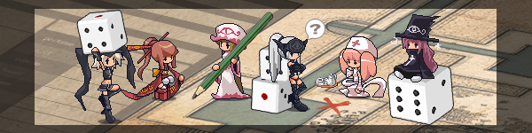

帽子世界TRPG是
現正公開中的免費遊戲「帽子世界」的TRPG版。

因為抱持著「要盡可能地把TRPG的規則簡化！」的
念頭，請要遊玩的人準備六面骰跟筆記用具就行了。因為這個設計是一個大膽的嘗試，所以如果有其不足之處請自行補充。
雖然跟免費遊戲「帽子世界」的世界觀幾乎相同，但為了TRPG進
行方便，做了一點修改。
Udonarium專用的各種設定用房間資料可以從這邊下載，泛用NPC的位置牌也包含進去了，請盡情使用。
→房
間資料(1.87MB)
TOP………………………帽子世界簡單的世界觀和基本用語集。
遊玩紀錄…………實際遊玩時的狀況，以文字的形式來介紹。
創造角色………寫著新角色創造的流程。
基礎規則………………能力値或行動判定或戰鬥之類的一般遊戲規則。
技能卡……………玩家能取得的技能卡一覽表。
物品…………………玩家的獲取的物品一覽表。
管理者規則…………進階規則解說。
有著互相交融的各式各樣的世界，即為帽子世界TRPG的舞台。
不管是劍與魔法的中世紀幻想風的世界，還是遭機械所支配的反烏托邦的科幻世界，抑或者是恐龍仍存活著的古代世界，又或者是由糖果所組成的童話世界
等等……，如此多樣的世界存在著。
這些世界都有一個持有帽子的管理人，許多居民在各個世界間往來。
◆帽子
用以創造世界的物品，在某處會有眼睛狀的裝飾。
如果對帽子施加物理破壞，會在瞬間復原。
◆管理人
帽子的所有人，只會有與管理人數量相同的世界。
與遊戲版不同的地方是，他們無法自由傳送於各個世界。
◆Decoy
為帽子之力所作，無法離開其誕生的世界。
從普通的人形到怪物般的姿態，有非常豐富的變種。
◆帽子世界的居民(Avatar)
與Decoy不同的是，他們能往返於各式各樣的世界。
由玩家所創造的角色，管理人也是帽子世界的居民。
與人形Decoy很難以肉眼分辨其差異。
大家的出生都是個謎，醒來時就已經在帽子世界裡了。
在那時候，你除了名字和家庭組成以外的記憶都消失了。
醒來的時間點因人而異，就這樣已經過了數十年了。
不可思議的是，大家看起來都沒變，因此在帽子世界中無法得知年齡。
◆水晶(cr)
因為蘊含了許多創造之力，因而是許多物品的材料。
只有帽子世界的居民能將Decoy轉換成水晶。
因為水晶能帶去其他世界的關係，所以扮演了金錢的角色。
但是，只有帽子世界的居民將其視為金錢。
◆Terminal
有著可以在各個世界間傳送的裝置的設施，其作用類似車站或機場。
傳送裝置多為魔法陣的形式，能移動到其他世界的Terminal。
有著商店、餐廳、旅館、博物館之類，冒險所需要的東西。
也有用以聯絡的公告欄，許多人將其作為冒險的起點。
傳送裝置只有帽子世界的居民能用，Decoy不能用。
基本上除了Terminal以外沒有其他世界間移動方法。
◆聚會
玩TRPG，也有人說「圍著桌子」。
在網路上玩TRPG，稱為「網會」。
◆劇本
指被以章節區分的故事與其範圍。
通常多個連續的劇本稱為「戰役」。
◆戰役遊玩
由多個劇本連繫而成的多個聚會的一種遊玩方式。
也有人簡稱戰役。
◆CM
帽子世界TRPG獨有詞彙，一般來說不使用。
Campaign Master的簡稱，戰役進行中的判定者。
◆GM
Game Master的簡稱，聚會中協助遊戲進行的管理者。
◆Mastering
TRPG的聚會進行，又或者是GM的工作與指示。
◆PL
Player的簡稱，指的是與會之人。
◆PC
Player Character的簡稱，指的是PL所創造的角色。
◆NPC
Non Player Character的簡稱。
指的是GM所創造並管理的角色。
◆Dice
骰子。擲骰是「Dice Roll」。
由Dice Roll所擲出的數字也被稱為擲骰。
◆2D6
骰子的數量與種類的簡稱，2指的是骰子數，6指的是面數。
比如說，3D10是3顆10面骰。
◆D66
使用兩顆6面骰，一邊是十位數，一邊是個位數，所組成的值。